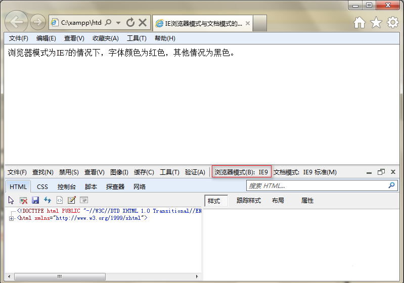
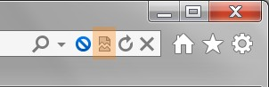
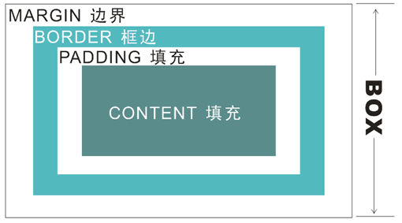

说到IE模式，可以先从各种浏览器的内核Rendering Engine(排版引擎/渲染引擎)说起。
主流的内核主要有 Gecko（Firefox浏览器）、WebKit（Safari、Chrome等浏览器）、Opera（Opera浏览器）、Trident（IE浏览器）。
IE所对应内核分别是：IE6、IE7、IE8（Trident 4.0）、IE9（Trident 5.0）、IE10（Trident 6.0）。
Trident内核的常见浏览器有：
世界之窗、 360安全浏览器、傲游；搜狗浏览器；腾讯TT；阿云浏览器（早期版本）、百度浏览器（早期版本）等。
其中部分浏览器的新版本是“双核”甚至是“多核”，其中一个内核是Trident，然后再增加一个其他内核。
国内的厂商一般把其他内核叫做“高速浏览模式”，而Trident则是“兼容浏览模式”，用户可以来回切换。
IE8在IE6、IE7的基础上增加了兼容性视图，它可以让网页以IE6/7的代码规范来显示，解决大部分由于代码标准不一致引起的网页问题。
“兼容性视图”涉及两个重要的功能便是“浏览器模式”和“文档模式”。

“浏览器模式”用于改变IE对该网页的默认文档模式、用的不同版本IE进行解析。
用户可以通过单击地址栏旁边的兼容性视图按钮来手动切换到兼容性模式(部分低版本IE浏览器)。

“文档模式”用于指定IE的页面排版引擎（Trident）以哪个版本的方式来解析并渲染网页代码。
IE6、IE7中"Quirks mode"（怪异模式）会使页面以旧版本（IE6以下）浏览器的模式来显示。
"Standards mode"(标准模式)特点是支持业界标准最为完善。然而要利用这个增强的支持功能，网页必须包含恰当的<!DOCTYPE>指令。
若一个网页没有包含<!DOCTYPE>指令，IE6会将它以quirks mode显示，此模式下盒子模型盒box-sizing: border-box一致（IE6以下版本的IE浏览器将 border 与 padding 都包含在 width 之内，效果等同于现在的box-sizing: border-box），It's funny。
举个栗子：ie6-8-quirk.html

若网页包含有效的<!DOCTYPE>指令但浏览器无法辨识，IE6会将它以IE6 standards mode显示。此模式下,IE6-IE8不支持box-sizing（CSS3才有的属性）。这意味着你的网页如果要使用box-sizing: border-box，必须使用quirk mode。
HTML 5
<!DOCTYPE html>HTML 4.01 Strict
该 DTD 包含所有 HTML 元素和属性，但不包括展示性的和弃用的元素（比如 font）。不允许框架集（Framesets）。
<!DOCTYPE HTML PUBLIC "-//W3C//DTD HTML 4.01//EN" "http://www.w3.org/TR/html4/strict.dtd">HTML 4.01 Transitional（较为常用）
该 DTD 包含所有 HTML 元素和属性，包括展示性的和弃用的元素（比如 font）。不允许框架集（Framesets）。
<!DOCTYPE HTML PUBLIC "-//W3C//DTD HTML 4.01 Transitional//EN"
"http://www.w3.org/TR/html4/loose.dtd">HTML 4.01 Frameset
该 DTD 等同于 HTML 4.01 Transitional，但允许框架集内容。
<!DOCTYPE HTML PUBLIC "-//W3C//DTD HTML 4.01 Frameset//EN"
"http://www.w3.org/TR/html4/frameset.dtd">XHTML 1.0 Transitional（基本等同HTML 4.01 Transitional）
该 DTD 包含所有 HTML 元素和属性，包括展示性的和弃用的元素（比如 font）。不允许框架集（Framesets）。必须以格式正确的 XML 来编写标记。
<!DOCTYPE html PUBLIC "-//W3C//DTD XHTML 1.0 Transitional//EN" "
http://www.w3.org/TR/xhtml1/DTD/xhtml1-transitional.dtd">要为你的网页指定文件模式，需要在你的网页中使用meta元素放入X-UA-Compatible http-equiv标头。
如下示例：IE使用IE7的标准模式（standards mode）编译内容。
<html>
<head>
<meta http-equiv="X-UA-Compatible" content="IE=7" />
<title>title</title>
</head>
<body>
<p>Content</p>
</body>
</html> 为什么网站重构前期有一段时间较多使用X-UA-Compatible content="IE=7"？
因为那个年代IE最高版本是IE8，IE7相比IE6对CSS支持更加全面，比如IE7支持＊全局选择器，IE8支持更加全面，但是bug也多，所以为了兼容性和重构成本，大家更多的选择了IE7的标准模式来解析网页。
现在IE已经更新到IE11，IE11已经几乎解决了老版本存在的所有bug，对HTML5和CSS3也支持充分。所以，现在让装了IE11的用户体验IE7的各种不支持和不兼容，是不合适的。
举个栗子：ie11-quirk-ie8.html
• Emulate IE8 mode 指示IE使用<!DOCTYPE>指令来编译内容。
Standards mode 指令会显示成IE8 Standards mode而quirks mode会显示成IE5 mode。不同于IE8 mode，Emulate IE8 mode重视<!DOCTYPE>指令。
• Emulate IE7 mode 指示IE使用<!DOCTYPE>指令来决定如何编译内容。
Standards mode指令会显示成IE7 Standards mode而quirks mode会显示成IE5 mode。不同于IE7 mode，Emulate IE7 mode重视<!DOCTYPE>指令。
• IE5 mode 指示IE使用IE7的quirks mode编译内容，和IE5中显示的非常类似。
• IE7 mode 指示IE使用IE7的standards mode编译内容，无论网页是否含有<!DOCTYPE>指令。
• IE8 mode 提供对业界标准的最高支持，包含 W3C Cascading Style Sheets Level 2.1 Specification和W3C Selectors API，并有限的支持 W3C Cascading Style Sheets Level 3 Specification (Working Draft)。
• Edge mode 指示IE以目前可用的最高模式显示内容。当使用IE8时其等同于IE8 mode。若(假定)未来放出支持更高兼容性模式的IE，使用Edge mode的页面会使用该版本能支持的最高模式来显示内容。同样的那些页面在使用IE8浏览时仍会照常显示。
由于edge mode使用该IE版本所能支持的最高模式来显示所浏览的网页内容，建议仅使用于测试页及其他非商用页面。
尽管从官方数据看起来，IE9已经全面支持HTML5和CSS3，但实际还是支持不到一半，所以我们还是从IE9开始向后兼容。（IE10已经支持很好，不在兼容范围内。）
我们使用html5.js来使IE6-9识别HTML5标签。
<!-- Le HTML5 shim, for IE6-8 support of HTML5 elements -->
<!--[if lt IE 9]>
<script src="js/html5.js"></script>
<![endif]-->
举个栗子：ie8-html5.html
img标签使用EvPng.js来使IE6支持PNG透明属性。
<div class="ie-png"><img src="images/logo2.png" alt="" /></div>
<!--[if lte IE 6]>
<script src="js/EvPng.js"></script>
<script language="javascript" type="text/javascript">
EvPNG.fix(".ie-png img");
</script>
<![endif]-->
举个栗子：ie6-png.html
IE6、IE7和IE8都不支持CSS3，这里我们提供一些常用的CSS3兼容方法。
我们使用媒体查询来实现桌面端与手机端的自适应设计，加载respond.src.js让IE6-9支持CSS3的媒体查询。
<!-- For IE6-9 support of media query -->
<!--[if lt IE 9]>
<script src="js/respond.src.js"></script>
<![endif]-->
举个栗子：ie8-media.html
图标字体被用来替代传统网页上的小图片图标，我们使用font-awesome-ie.min.css来让IE6-7也支持这个功能。
<!-- For IE6-7 support of font-awesome -->
<!--[if lt IE 8]>
<link rel="stylesheet" href="css/font-awesome-ie.min.css" type="text/css" />
<![endif]-->
举个栗子：ie6-font.html
我们使用roundies.js来使IE6-8支持圆角属性。
<div class="ie-round" style="padding:10px;border-radius:6px;border:1px solid #ccc;">IE圆角边框</div>
<script src="js/roundies.js"></script>
<script language="javascript" type="text/javascript">
DD_roundies.addRule('.ie-round', '6px');
</script>
举个栗子：ie8-round.html
提醒：使用JS插件会消耗一些性能，建议在单页和小范围内使用。
在页面大量使用PNG图片和圆角属性（兼容耗费大量浏览器性能），又需要适配IE6－8的情况下，需要把图片导出为带背景色的JPG，或者有锯齿的GIF格式，边框线也按照尖角设计。
渐变和边框背景无法通过CSS3来实现，需要切割图片作为背景供CSS平铺背景用。
网页小元素图标使用图标字体库里有的（http://fontawesome.io/icons/），找出该图标字体的类名，然后提供给前端。
自定义的小图标需要切割，运维布局替换极不方便。
描述：浮动的div在IE6下margin值会加倍。这是一个IE6都存在的bug。
解决方法：在这个div里面加上display:inline;
举个栗子：ie6-margin.html
描述：图片下有空隙。
解决方法：改变html的布局，或者设置img 为display:block 或者设置vertical-align 属性为 vertical-align:top | bottom | middle 都可以解决。
举个栗子：ie6-img.html
描述：IE6下这个问题是因为默认的行高造成的。
解决方法：方法也有很多,例如:overflow:hidden | zoom:0.08 | line-height:1px。
举个栗子：ie6-1px.html
IE的hack技巧大致分为4种：条件注释法、类内属性前缀法(IE兼容用最多的方法)、选择器前缀法、IE选择器前缀法。
条件注释一般用来引用专门为IE准备的JS插件（如在其他浏览器下则不加载，减轻加载负担），如我们上述所讲的PNG透明只在IE6下加载。
<!--[if !IE]> 除IE外都可识别 <![endif]-->
<!--[if IE]> 所有的IE可识别 <![endif]-->
<!--[if IE 6]> 仅IE6可识别 <![endif]-->
<!--[if lt IE 6]> IE6以及IE6以下版本可识别 <![endif]-->
<!--[if gte IE 6]> IE6以及IE6以上版本可识别 <![endif]-->
<!--[if IE 7]> 仅IE7可识别 <![endif]-->
<!--[if lt IE 7]> IE7以及IE7以下版本可识别 <![endif]-->
<!--[if gte IE 7]> IE7以及IE7以上版本可识别 <![endif]-->
<!--[if IE 8]> 仅IE8可识别 <![endif]-->
<!--[if IE 9]> 仅IE9可识别 <![endif]-->
lte：就是Less than or equal to的简写，也就是小于或等于的意思。
lt ：就是Less than的简写，也就是小于的意思。
gte：就是Greater than or equal to的简写，也就是大于或等于的意思。
gt ：就是Greater than的简写，也就是大于的意思。
举个栗子：ie6-png-hack.html
通常是在属性上加前缀，比如（-webkit -moz -ms -o IE下有＊ ＋ _ ）。
比如 border-radius 圆角，主流浏览器都有他们的专有hack。
-webkit-border-radius: 24px; /* Chrome and Safari */
-moz-border-radius: 24px; /* Firefox */
-ms-border-radius: 24px; /* IE */
-o-border-radius: 24px; /* Opera */
border-radius: 24px;也有不同的是IE8及以上版本是在CSS属性末尾（分号前）添加相应IE版本的代码（ \9 \9\0）。
下面的例子，先写全部浏览器能识别的CSS属性，然后hack的CSS属性写在最后一行，这样在特定浏览器下就只显示hack的CSS属性，其他浏览器显示最初的CSS属性。IE的写法顺序也一样，依次从IE-11（最高版本）> IE-10 > IE-9 > IE-8 > IE-7 最后到IE-6。（这样就可以显示每个IE版本下特定的属性，又不会出现属性互相污染）
color: #ccc;
color: #ccc\9; /* IE6-IE10 */
color: #ccc\9\0; /* IE9-IE10 */
color: #ccc\0; /* IE8-IE10 */
*color: #ccc; /* IE6-IE7 */
+color: #ccc; /* IE7 */
_color: #ccc; /* IE6 */举个栗子：ie6-11-hack.html
选择器前缀法是采用媒体查询的方法（需要CSS3支持），一般前面几种已经能解决90%的兼容问题，如果可以用上面的方法解决，不推荐首先用这种。
@media screen and (-webkit-min-device-pixel-ratio:0) {
.class-name{
color: #ccc; /* Chrome and Safari */
}
}
@-moz-document url-prefix() {
.class-name{
color: #ccc; /* Firefox */
}
}
@media all and (min-width:0) {
.class-name{
color: #ccc; /* Opera */
}
} 如果碰到诸如IE8专属的hack等上面的方法都无法解决的时候，就可以用这个IE选择器前缀法了，前提是让IE6-IE8版本先支持媒体查询。
/* IE 6/7 */
@media screen\9 {
.class-name{
color: #ccc;
}
}
/* IE 6/7/8 */
@media \0screen\,screen\9 {
.class-name{
color: #ccc;
}
}
/* IE 8 */
@media \0screen {
.class-name{
color: #ccc;
}
}
/* IE 8/9/10 & Opera */
@media screen\0 {
.class-name{
color: #ccc;
}
}
/* IE 9/10, Firefox 3.5+, Opera */
@media screen and (min-resolution: +72dpi) {
.class-name{
color: #ccc;
}
}
/* IE 9/10 */
@media screen and (min-width:0\0) {
.class-name{
color: #ccc;
}
}
/* IE 10+ */
@media screen and (-ms-high-contrast: active), (-ms-high-contrast: none) {
.class-name{
color: #ccc;
}
}
/* IE 11 */
@media all and (-ms-high-contrast:none) {
*::-ms-backdrop, .class-name {
color: #ccc;
}
}
/* Everything but IE 6/7/8 */
@media screen and (min-width: 400px) {
.class-name{
color: #ccc;
}
}1. IE6-10系列大部分的浮动 div 问题，可以通过设置层的 width height 还有背景色（调试用）解决。
2. 容器内有浮动层元素的，容器末尾添加清除浮动属性。
3. 使用IE-TEST和谷歌调试工具，IE-8及以下版本可以使用fire-bug的JS版本，IE8及以上版本内置的调试工具仅供参考（和实际显示效果不一致）。
4. IE调试都在标准模式下进行，兼容性视图下都仅供参考，和实际版本显示有差距。
5. 调试版本从高到低依次兼容，防止属性版本污染。
6. 调试过程，依次从HTML最外层开始删除无关的HTML结构和加载的CSS样式和JS，直到你出现问题的地方。
7. 如果项目时间紧，可以只在首页上做全部兼容，其他的页面兼容只做布局方面，忽略掉细节（有些细节一般不是一两天时间能解决的）。
8. 能用其他方法避免的话，尽量少写hack。
9. 细心，耐心，有目的性的反复调试，调试过程经常备份调试结果。
若有疑问，先减少百分比。
有时候某些错误会使50%+50%成为100.1%，使网页出现问题。这时请尝试将这些值改为49%，甚至49.9%。
是否重设了默认的样式
某些属性如margin、padding等，不同浏览器会有不同的解释。因此最好在开发前首先将全体的margin、padding设置为0、列表样式设置为none等。
同时使用两个类
一般只能给一个元素设定一个类（Class），但这并不意味着不能用两个。
对于一个ID，不能这样写。